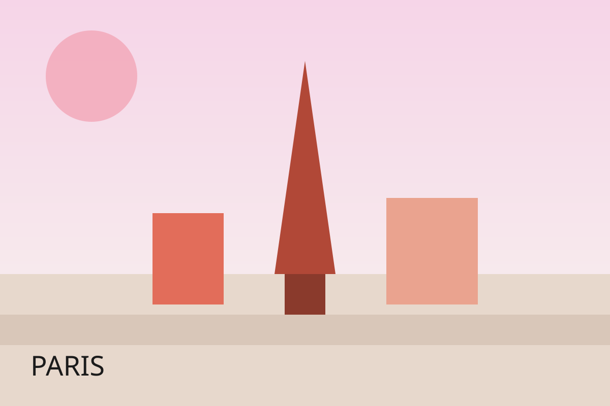
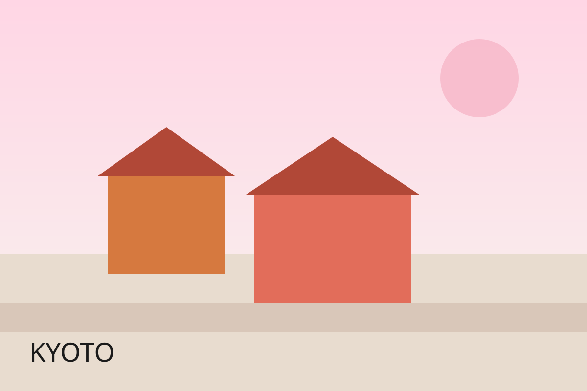
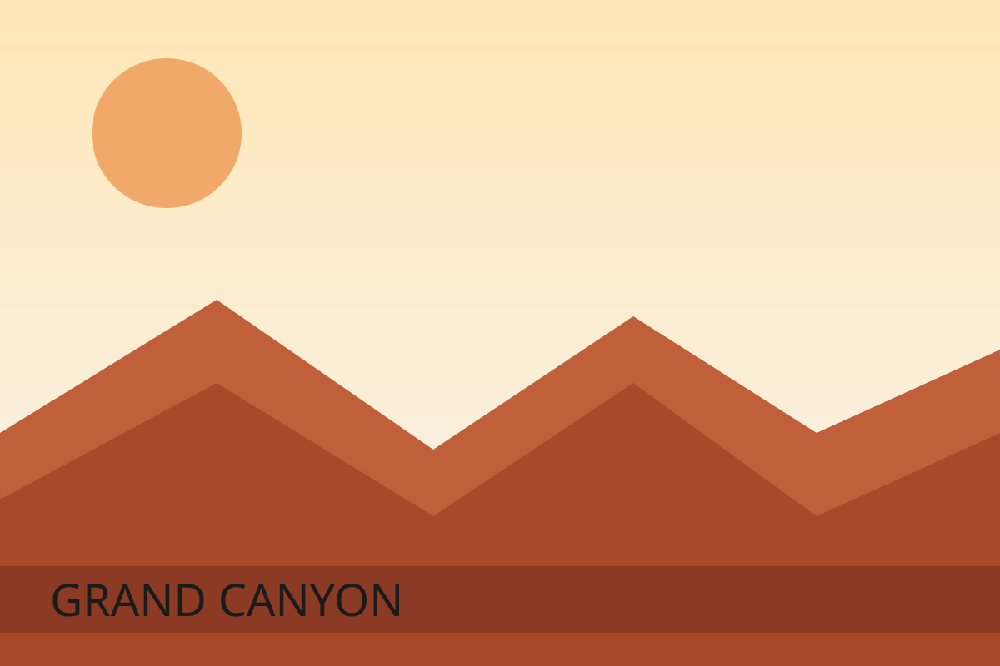
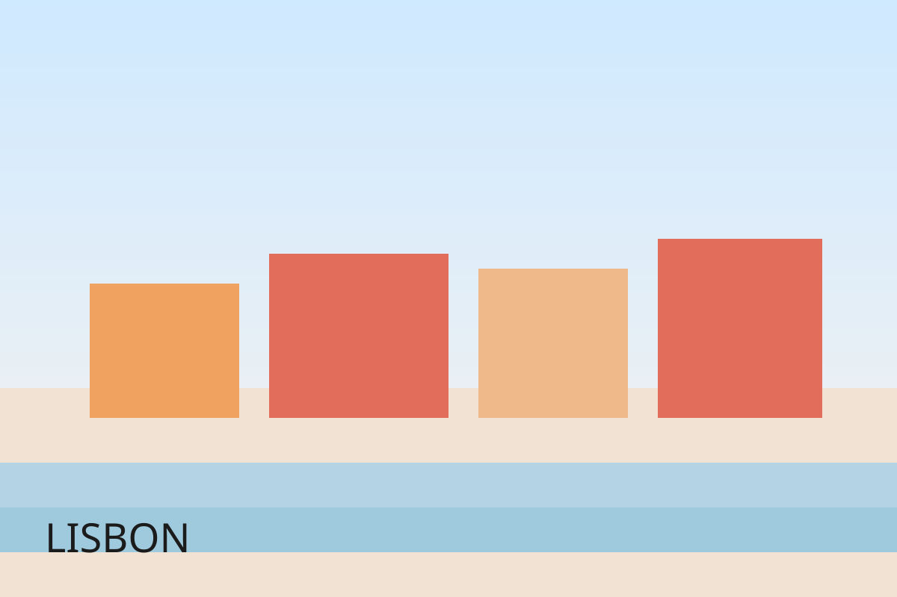
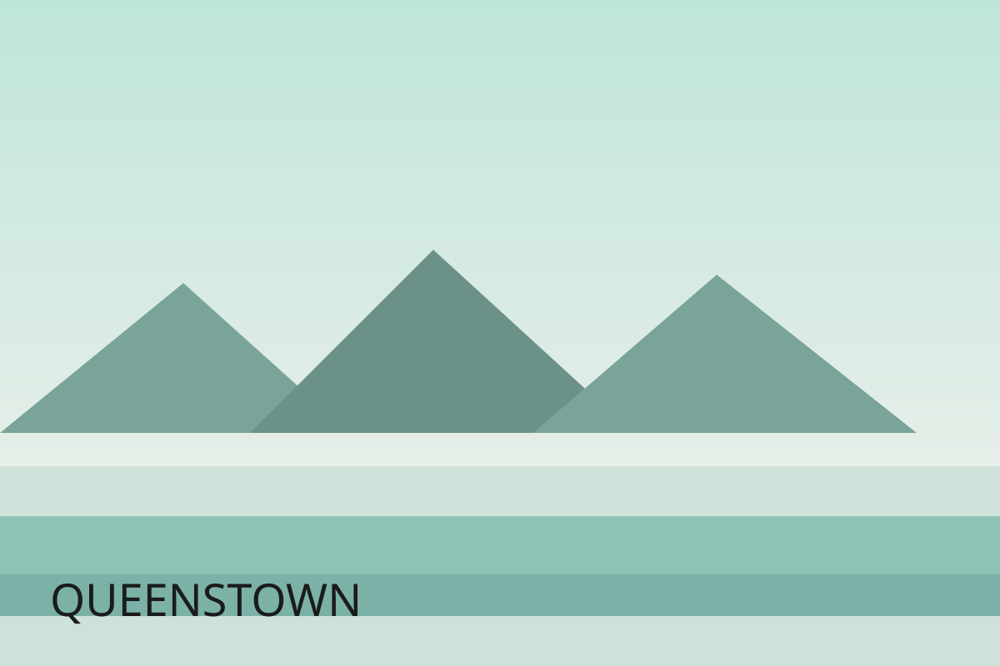

항공/교통
주요 도시 교통 패스, 공항 이동 루트, 야간 이동 시간대를 미리 확인하세요.
Wave2trip
Wave2trip 추천 여행지
각 도시의 분위기, 일정, 맛집, 로컬 팁까지 한 번에 확인하세요. 일정은 3~5일 기준으로 설계했습니다.
Romance & Art
예술과 미식, 세련된 산책이 공존하는 도시. 감성 여행과 문화 탐방이 완벽하게 균형을 이룹니다.

알렉산드르 3세 다리 일출, 갸르니에 오페라 내부, 몽마르트 계단 위 파노라마 뷰.
Tradition & Calm
사찰과 정원, 티 하우스의 조용한 리듬. 천천히 걷고, 깊이 머무르는 도시입니다.

새벽 사찰 투어, 다도 클래스, 기모노 스냅 촬영.
Adventure & Nature
압도적인 협곡과 별빛이 만나는 자연. 하이킹과 캠핑을 즐기는 여행자에게 추천합니다.

해가 진 후 1시간 뒤부터가 가장 선명합니다. 뷰포인트에서 빛이 적은 곳으로 이동하세요.
Coast & Nostalgia
언덕과 트램, 바다의 노을이 어우러지는 도심. 감성적인 골목 산책을 좋아한다면 최적입니다.

언덕이 많아 오전에는 도보, 오후에는 트램을 추천합니다. 미라도우루 전망대는 해 질 무렵이 좋습니다.
Lake & Mountains
호수와 설산이 조화를 이루는 액티비티의 도시. 자연 속에서 에너지를 충전하세요.

호수 뷰 숙소는 일몰 방향으로 객실을 선택하면 최고의 뷰를 즐길 수 있습니다.
떠나기 전 꼭 챙겨야 할 기본 체크리스트입니다.
주요 도시 교통 패스, 공항 이동 루트, 야간 이동 시간대를 미리 확인하세요.
일일 예산과 카드 사용 가능 지역을 체크해 현지에서의 동선을 단순화합니다.
자연 액티비티가 많은 일정이라면 커버 범위를 넓게 설정하세요.
야경/자연 촬영을 위해 간단한 삼각대와 보조 배터리를 준비합니다.
여행지 상세 페이지에서 가장 많이 궁금해하는 질문을 모았습니다.
가능합니다. 추천 일정은 기본 동선을 제시한 것이며, 취향에 따라 하루 일정을 늘리거나 줄여도 좋습니다.
교토와 리스본은 도보 이동이 쉬워 1인 여행자에게 좋습니다.
파리의 야경, 퀸스타운의 레이크 뷰가 특히 인기 있습니다.